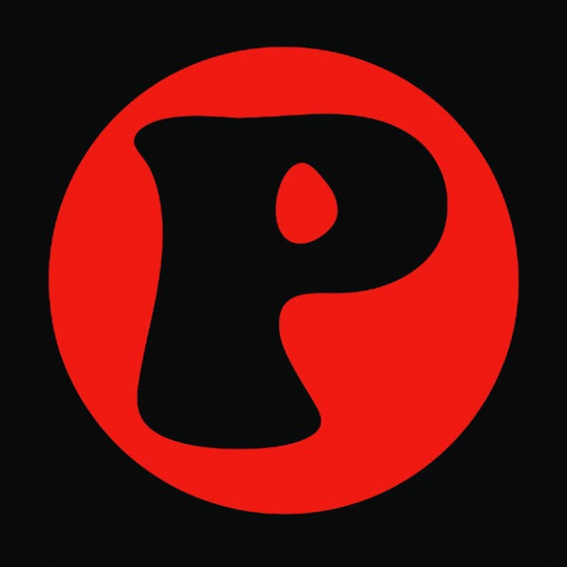
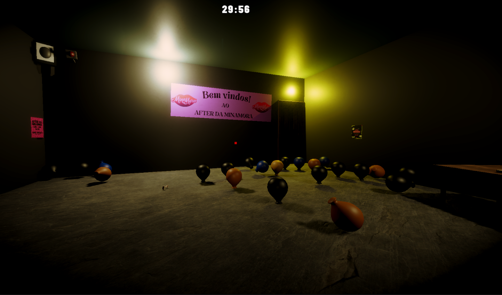
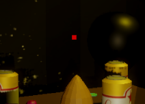
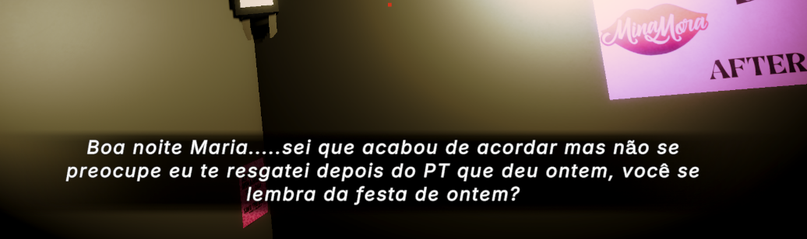
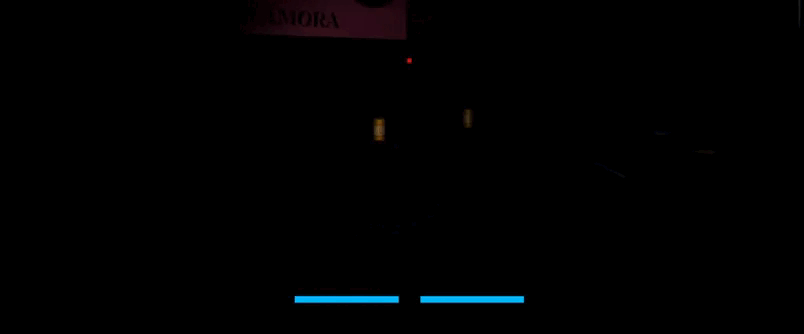
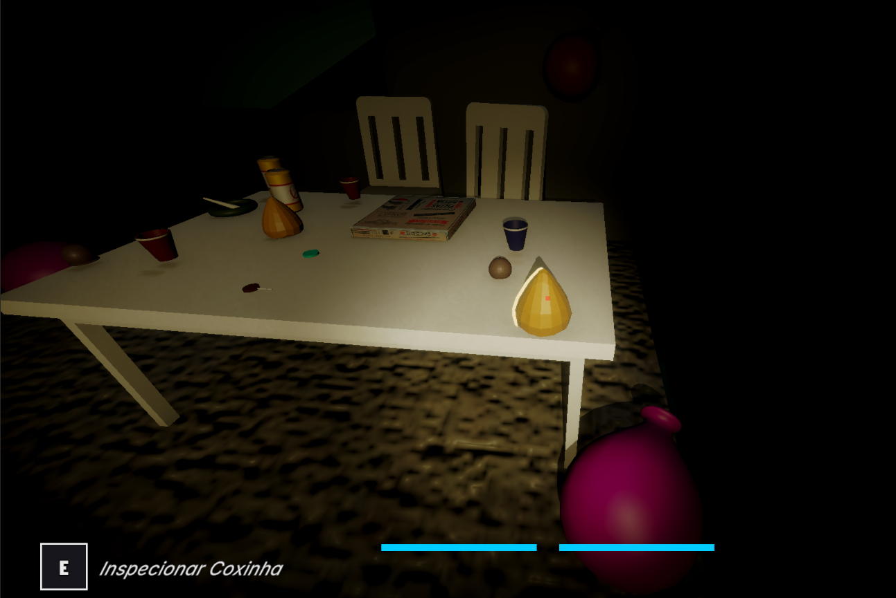
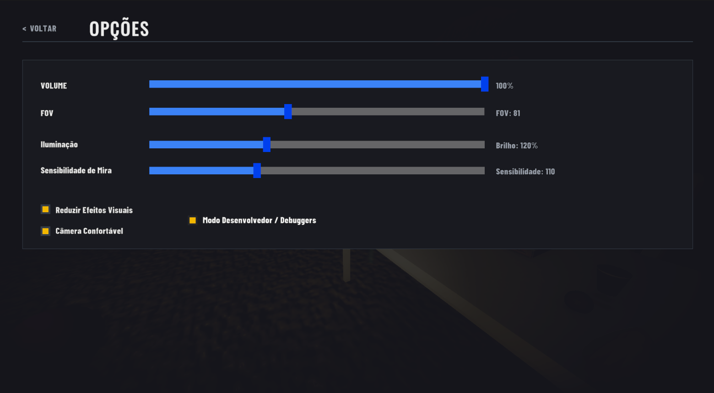

Locked Unit Design System
Estruturação completa de padrões visuais, táteis, semânticos e de acessibilidade.
Studio & Atmosfera
Princípios da Pingado Studios e a identidade visual de Locked Unit.
A identidade visual de Locked Unit reflete o choque entre um depósito logístico e o calor juvenil de uma festa universitária. O design de interface opera sob o paradigma do Minimalismo Diegético: os elementos gráficos pertencem fisicamente ao espaço ou simulam instrumentos analógicos e digitais reais.
Diegese & Não-Intrusão
A HUD é invisível na maior parte do tempo. Menus, visores e prompts só surgem quando o jogador direciona o olhar a um objeto interativo.
Clareza sob Pânico
Em momentos de perseguição de Augustinho ou nos últimos 5 minutos de tempo, a informação vital é imediata e de leitura periférica rápida.
TECNOLÓGICO
Displays de 7 segmentos de LED e botões luminosos saturados.
Multimodalidade Mandatória
Nenhuma pista ou perigo depende exclusivamente de uma cor ou de um som isolado. Sempre há forma, brilho, vibração e áudio.

Tokens de Cor & Paleta Oficial
Valores hexadecimais autenticados no código da Unity. Clique no botão de cada cartão para copiar o código HEX.
Paleta de Interface & Cenário
#0A0D12
Fundo imersivo, tela cheia, sombras de vinheta periférica e modais.
#1C222B
Superfícies de diálogo, caixas de inventário e molduras de botões inativos.
#485261
Linhas divisórias, contornos de containers e bordas de containers UI.
#00D2FF
Estamina em repouso, seletores focados e destaque de interações táteis.
#F0B604
Cronômetro global, títulos de capítulos e botões de ação primária.
#FF2A2A
Vinheta de perseguição de Augustinho, estamina esgotada e bips finais.
#F01A12
Assinatura corporativa da Pingado Studios e selos oficiais.
#F5F7FA
Texto de alto contraste, legendas principais e dígitos luminosos.
Paleta Oficial do Totem Genius (Fase 2)
As 5 cores padronizadas no roteiro e na programação da Unity para o puzzle rítmico da Sala de Segurança:
#0072F5
Botão 0 do Totem. Frequência sonora grave (261.6 Hz - Dó).
#FF7A00
Botão 1 do Totem. Frequência sonora média-baixa (329.6 Hz - Mi).
#590090
Botão 2 do Totem. Frequência sonora média (392.0 Hz - Sol).
#FFD60A
Botão 3 do Totem. Frequência sonora média-alta (523.2 Hz - Dó Alto).
#FF3CAC
Botão 4 do Totem. Frequência sonora aguda (659.2 Hz - Mi Alto).
Tipografia & Escala
Mapeamento semântico das famílias tipográficas utilizadas no projeto e seus papéis na experiência.
| Família Tipográfica | Peso & Estilo | Tamanho Base | Uso Semântico | Amostra |
|---|---|---|---|---|
| Rubik Dirt | Regular (400) | 120px / 48px | Logotipo oficial de Locked Unit e telas de impacto | LOCKED UNIT |
| Oswald | SemiBold (600) / Bold (700) | 40px / 36px | Títulos de menus, botões principais e visor do cofre | ABRIR COFRE |
| Barlow Condensed | Bold (700) | 36px | Cronômetro global de 30 minutos no HUD | 29:54 |
| Inter | Medium (500) / Regular (400) | 24px / 16px | Legendas de rádio de Lucas, corpo de texto e UI geral | "Procure as chaves no container lateral." |
| Kalam | Regular (400) | 26px | Bilhetes diegéticos manuscritos e notas de festa | A senha da gaveta é a data da festa! |
| JetBrains Mono | Regular (400) / Bold (700) | 14px / 16px | Prompts de teclado (E, TAB) e painéis de terminal | [E] INSPECIONAR ITEM |
Core Loop: Tabela de Verbos & Efeitos
Mapeamento dos 15 verbos de interação do jogador, seus inputs, feedbacks visuais (Juice), sonoros e efeitos no jogo.
| Verbo / Ação | Input | Feedback Visual & Juice | Feedback Sonoro | Efeito no Jogo |
|---|---|---|---|---|
| Andar | W A S D | Leve balanço de visão (desativável no modo conforto) | Não possui | Locomoção furtiva sem alertar Augustinho |
| Correr | Shift + WASD | Barra de estamina bilateral acende em ciano e se contrai | Respiração ofegante | Aumento de velocidade com consumo de estamina |
| Olhar / Mirar | Mouse | Retículo central de 4px reage à colisão com objetos | Silêncio de câmera | Inspeção angular e orientação no espaço 3D |
| Interagir / Coletar | E | QuickOutline 2px destaca o item em branco | Estalo metálico de chave ou ruído de papel | Armazena chave/nota |
| Inspecionar em 3D | E no item alvo | Desfocagem de fundo, objeto centralizado em 360° | Não possui | Permite analisar o itens e números gravados |
| Decodificar Cofre | Cliques ou Teclado | Dígitos possuem uma pequena animação e vermelha se errar. | Cliques mecânicos pesado | Abre o cofre com a senha de 7 dígitos |
| Memorizar / Pressionar | Cursor no Genius | Botão acende a 100% de emissão cromática | Nota musical harmônica dedicada por botão | Avança estágios de 1 a 7 do Totem Genius |
| Vigiar Janela (Gaze Freeze) | Olhar para Augustinho | Luz da lanterna externa estabiliza. | Musica volta ao normal | Paralisa o avanço de Augustinho. |
| Consultar Notas | TAB | Abre painel | Não possui | Exibe todas as pistas coletadas sem pausar a tensão |
| Alerta de Proximidade | Inimigo < 8 metros | Vinheta periférica amarela pulsa em batimentos | Batimentos cardíacos acelerados e passos | Informa perigo iminente sem necessidade de visão direta |
| Estamina Esgotada | Barra em 0% | Barra de estamina pulsa em vermelho escuro | Ofego profundo de Maria; perda de fôlego | Bloqueio temporário da corrida por 3 segundos |
| Tempo Crítico (< 5 min) | Relógio global | Cronômetro passa de amarelo para vermelho piscante | Tique-taque de relógio ganha eco | Pressão psicológica máxima para finalização |
| Acerto no Totem | Sequência correta | Todos os 5 botões piscam simultaneamente em verde | Acorde musical ascendente positivo | Libera o próximo estágio do puzzle Genius |
| Falha no Totem | Botão incorreto | Painel vibra e projeta flash vermelho instantâneo | Buzina industrial dissonante de erro e bexiga estourando. | Reinicia a sequência do estágio atual |
Componentes de Interface & HUD
Padrões de layout para elementos de tela, estados de foco e feedback diegético.
Cronômetro Global
Ancorado no topo central da tela (top: 48px). Tipografia Barlow Condensed Bold, 36px. Cor Branco por padrão; transiciona para Vermelho de Tensão (#FF2A2A) e pulso rítmico aos 5 minutos restantes.

Retículo Reativo (Crosshair)
Ponto central de 4px com 70% de opacidade. Quando o raycast atinge um objeto com tag Inspectable,
o retículo expande para um círculo de 14px e exibe a tecla de interação E.

Caixa de Diálogo do Interfone
Ancorada na parte inferior central da tela com a fonte branca. Tipografia Inter Medium 22px.

Barra de Estamina Bilateral
Duas linhas simétricas abaixo do retículo de mira. Apenas visível enquanto a jogadora corre. Recarrega gradualmente após 1.5 segundo de inatividade na locomoção rápida.


Diretrizes de Acessibilidade & Conforto
Soluções implementadas na engine para garantir conforto motor, visual e cognitivo para múltiplos perfis de jogadores.
Em conformidade com as diretrizes do Game Accessibility Guidelines (GAG) e com os ensinamentos da disciplina de Design de Interface, a Pingado Studios implementou um painel dedicado de Opções & Acessibilidade diretamente no menu de pausa e no fluxo de primeira inicialização do jogo:
Controle Amplo de Brilho (50% a 250%)
Permite calibrar a curva de exposição EV do URP (-1.25 a +2.75 EV). Essencial para jogadores com baixa sensibilidade a contrastes escuros ou que jogam em monitores com reflexos em ambientes iluminados.
Modo Câmera Confortável
Desativa 100% da oscilação de cabeça (head bobbing) e suaviza a rotação brusca de câmera em primeira pessoa, eliminando náuseas e desconforto para pessoas com labirintite ou cinetose.
Redução de Efeitos Visuais
Remove granulação de filme (Film Grain), desliga a aberração cromática nas bordas da lente e estabiliza tremores intensos de susto.
Slider de FOV (60° a 110°)
Permite ampliar a visão angular da câmera, prevenindo a sensação de visão de túnel que frequentemente causa tonturas em jogos 3D.
Legendas em Alto Contraste
Todas as falas de rádio de Lucas e efeitos ambientais críticos são acompanhados por legendas sincronizadas com tarja preta de fundo de alta opacidade.
Puzzles com Código Duplo
O Totem Genius associa simultaneamente cor saturada, posição física dos botões, símbolo geométrico gravado no relevo e tom sonoro exclusivo, garantindo que jogadores daltônicos ou surdos possam concluir o desafio sem barreiras.
